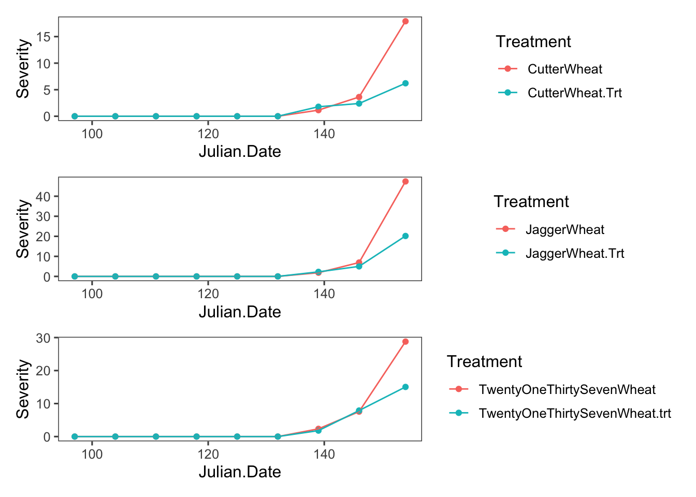
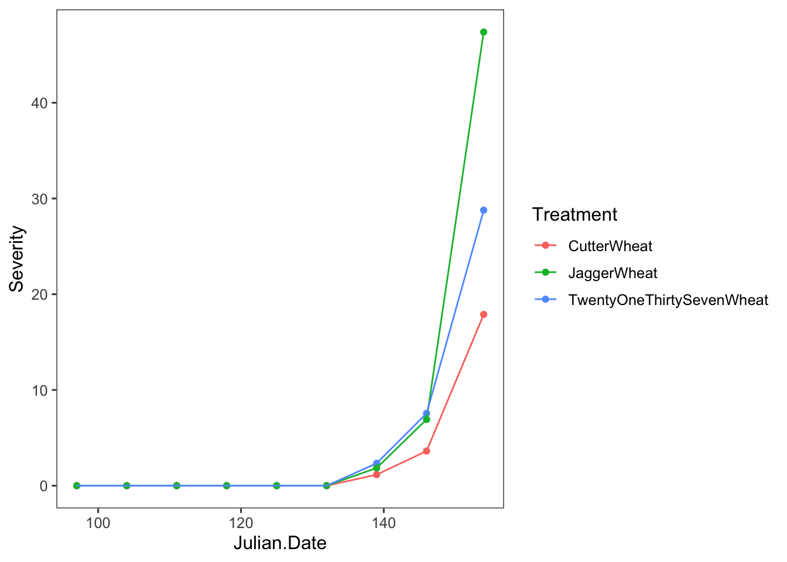
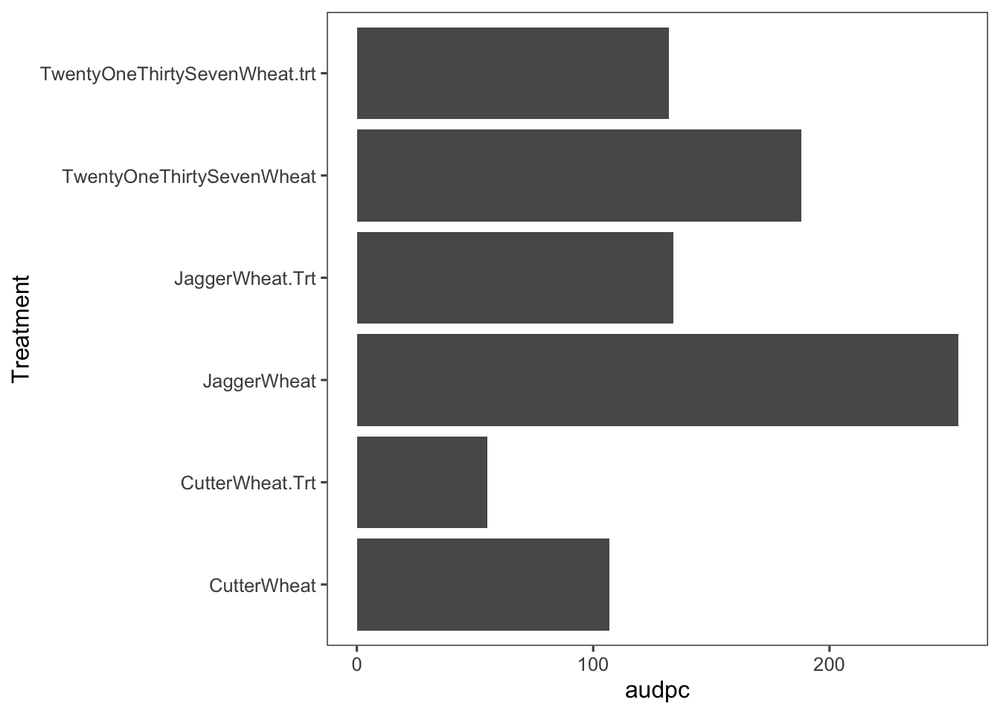

library(tidyverse)
library(knitr)
library(patchwork)
library(ggthemes)
library(rmarkdown)
theme_set(theme_few())
knitr::opts_chunk$set(echo = FALSE, warning = FALSE, message = FALSE)
options(digits = 3)AUDPC in Real Data
R
PDE
เกริ่น
บทความนี้จะมาแสดงให้เห็นประโยชน์และการใช้ประโยชน์ที่ได้จากการพิจารณาการพัฒนาของโรคเมื่อเวลาผ่านไปว่ามีความแตต่างกันอย่างไร ถ้าพันธุ์พืชไม่เหมือนกัน หรือ วิธีการจัดการที่แตกต่างกัน การศึกษารูปแบบการพัฒนาของโรคเมื่อเวลาผ่านไป จะช่วยตัดสินใจ เพื่อเลือกใช้ วิธีการใดเพื่อ ลดค่า AUDPC เพราะว่า ค่านี้ มีความสัมพันธุ์กับผลผลิต
ตัวอย่างการศึกษาการต้านทานโรคและการใช้สารเคมีป้องกันกำจัดโรคต่อการพัฒนาของโรคสนิมในใบข้าวสาลี
ผลกระทบของการต้านทานโรคและการใช้สารฆ่าเชื้อราต่อความก้าวหน้าของโรคสนิมในใบข้าวสาลีสามารถประเมินได้โดยใช้ AUDPC โดยทั่วไป การต้านทานเป็นวิธีที่ดีที่สุดในการควบคุมโรคทางใบในข้าวสาลี เช่น สนิมแถบและสนิมใบ (เกิดจาก Puccinia triticina)
ข้อมูลแปลงจาก Suggested exercise:Using the area under the disease progress curve to compare disease severity แสดงให้เห็นถึงความแตกต่างในความรุนแรงของโรคสำหรับพันธุ์ที่ไวต่อการเกิดสนิมของพันธุ์ Jagger และ พันธุ์ต้านทาน 2137 และ Cutter นอกจากนี้ การทดลองนี้ศึกษาเรื่องระยะเวลาการฉีดพ้นสารป้องกันกำจัดโรค ซึ่งระยะเวลาเป็นสิ่งสำคัญ หากจะใช้สารเคมีกำจัดโรคเพื่อควบคุมโรคราสนิมของข้าวสาลี โดยทั่วไป สารเคมีป้องกันกำจัดเชื้อราจะมีผลเพียงสองสัปดาห์หลังการใช้ เพื่อป้องกันการติดเชื้อใหม่ในช่วงเวลานั้น และไม่แนะนำให้ใช้หลังออกดอก ดังนั้นช่วงเวลาที่สำคัญสำหรับการใช้สารเคมีป้องกันกำจัดโรคคือ 2 สัปดาห์ก่อนออกดอก การสูญเสียพื้นทีใบเพื่อ่สังเคราะห์แสงจะส่งผลให้สูญเสียผลผลิตมากที่สุด เมื่อพ้นช่วง 2 สัปดาห์นี้ การสูญเสียการติดเชื้อครั้งใหม่จะรุนแรงน้อยกว่ามาก
ข้อมูล
| Julian.Date | TwentyOneThirtySevenWheat | TwentyOneThirtySevenWheat.trt | CutterWheat | CutterWheat.Trt | JaggerWheat | JaggerWheat.Trt |
|---|---|---|---|---|---|---|
| 97 | 0.00 | 0.00 | 0.00 | 0.00 | 0.00 | 0.00 |
| 104 | 0.00 | 0.00 | 0.00 | 0.00 | 0.00 | 0.00 |
| 111 | 0.00 | 0.00 | 0.00 | 0.00 | 0.00 | 0.00 |
| 118 | 0.00 | 0.00 | 0.00 | 0.00 | 0.00 | 0.00 |
| 125 | 0.00 | 0.00 | 0.00 | 0.00 | 0.00 | 0.00 |
| 132 | 0.00 | 0.00 | 0.00 | 0.00 | 0.00 | 0.00 |
| 139 | 2.34 | 1.81 | 1.15 | 1.79 | 1.85 | 2.27 |
| 146 | 7.56 | 7.89 | 3.62 | 2.40 | 6.92 | 5.00 |
| 154 | 28.78 | 15.04 | 17.89 | 6.21 | 47.39 | 20.17 |
ข้อมูลตาราง 7 ตัวแปร Julian.Date คือ วันที่ของปี ซึ่งประเมินโรค 9 ครั้ง ทุก ๆ 7 วัน เริ่มตั้งแต่วันที่ 97 คือวันที่ 97 104 11 118 125 132 139 146 154 บันทึกใน คอลัมน์ต่อไปๆ คือ พันธ์ข้าวสาลต่าง ๆ และ ีที่ไม่ฉีดพ้น
จากโครงสร้างข้อมูลนี้ ยังไม่พร้อมที่จะ นำมาวิเคราะห์ จึงต้องจัดโครงสร้างใหม่
| Julian.Date | Treatment | Severity |
|---|---|---|
| 97 | TwentyOneThirtySevenWheat | 0.00 |
| 97 | TwentyOneThirtySevenWheat.trt | 0.00 |
| 97 | CutterWheat | 0.00 |
| 97 | CutterWheat.Trt | 0.00 |
| 97 | JaggerWheat | 0.00 |
| 97 | JaggerWheat.Trt | 0.00 |
| 104 | TwentyOneThirtySevenWheat | 0.00 |
| 104 | TwentyOneThirtySevenWheat.trt | 0.00 |
| 104 | CutterWheat | 0.00 |
| 104 | CutterWheat.Trt | 0.00 |
| 104 | JaggerWheat | 0.00 |
| 104 | JaggerWheat.Trt | 0.00 |
| 111 | TwentyOneThirtySevenWheat | 0.00 |
| 111 | TwentyOneThirtySevenWheat.trt | 0.00 |
| 111 | CutterWheat | 0.00 |
| 111 | CutterWheat.Trt | 0.00 |
| 111 | JaggerWheat | 0.00 |
| 111 | JaggerWheat.Trt | 0.00 |
| 118 | TwentyOneThirtySevenWheat | 0.00 |
| 118 | TwentyOneThirtySevenWheat.trt | 0.00 |
| 118 | CutterWheat | 0.00 |
| 118 | CutterWheat.Trt | 0.00 |
| 118 | JaggerWheat | 0.00 |
| 118 | JaggerWheat.Trt | 0.00 |
| 125 | TwentyOneThirtySevenWheat | 0.00 |
| 125 | TwentyOneThirtySevenWheat.trt | 0.00 |
| 125 | CutterWheat | 0.00 |
| 125 | CutterWheat.Trt | 0.00 |
| 125 | JaggerWheat | 0.00 |
| 125 | JaggerWheat.Trt | 0.00 |
| 132 | TwentyOneThirtySevenWheat | 0.00 |
| 132 | TwentyOneThirtySevenWheat.trt | 0.00 |
| 132 | CutterWheat | 0.00 |
| 132 | CutterWheat.Trt | 0.00 |
| 132 | JaggerWheat | 0.00 |
| 132 | JaggerWheat.Trt | 0.00 |
| 139 | TwentyOneThirtySevenWheat | 2.34 |
| 139 | TwentyOneThirtySevenWheat.trt | 1.81 |
| 139 | CutterWheat | 1.15 |
| 139 | CutterWheat.Trt | 1.79 |
| 139 | JaggerWheat | 1.85 |
| 139 | JaggerWheat.Trt | 2.27 |
| 146 | TwentyOneThirtySevenWheat | 7.56 |
| 146 | TwentyOneThirtySevenWheat.trt | 7.89 |
| 146 | CutterWheat | 3.62 |
| 146 | CutterWheat.Trt | 2.40 |
| 146 | JaggerWheat | 6.92 |
| 146 | JaggerWheat.Trt | 5.00 |
| 154 | TwentyOneThirtySevenWheat | 28.78 |
| 154 | TwentyOneThirtySevenWheat.trt | 15.04 |
| 154 | CutterWheat | 17.89 |
| 154 | CutterWheat.Trt | 6.21 |
| 154 | JaggerWheat | 47.39 |
| 154 | JaggerWheat.Trt | 20.17 |
โครงสร้างข้อมูลพร้อมวิเคราะห์ต่อแล้ว ต่อไป ดูกราฟ การพัฒนาของโรคเมื่อเวลาผ่านไปว่าแต่ละกรรมวิธีนั้น เป็นอย่างไรนั้น
ปรับโครงสร้างข้อมูล

กราฟ disease progress over time
ถ้ามาดูกราฟ แยกกันในแต่ละพันธุ์ เปรียบเทียบระหว่าง ไม่พ้นสารเคมี กับพ่น

จะเห็นชัดเจนมากขึ้นว่า ถ้าฉีดพ้นแล้ว การพัฒนาของโรคพืชเมื่อเวลาผ่านไปลดลง

ข้อมูลชุดนี้เอง ก็สามารถบ่งบอกว่าพันธุ์ใดมีความต้านทานต่อโรคราสนิมมากกว่ากัน จากกราฟ ก็พอจะบอกได้ว่า พันธุ์ Cutter นั้น ต้านทานโรคมากกว่าอีก 2 พันธุ์
คำนวน audpc
มาดูวิธีการวิเคราะห์หาค่า AUDPC กันด้วย epifitter::AUDPC() มันมีทริคนิดหน่วยครับ เพราะว่า function ถูกออกแบบมาให้คำนวน audpc ข้อมูลชุดใดชุดหนึ่ง ดังนั้นถ้า ชุดข้อมูลมีหลาย Treatment ก็จะต้อง คำนวน audpc แต่ละ Treament ซึ่ง อาสจจะต้อง subset ข้อมูลก่อนแล้วจึงจะ คำนวนหาค่า audpc ได้
ซึ่งสำหรับข้อมูลจริง อาจจะต้องพึ่ง package tidyr และ purrr ดังตัวอย่างที่ทำให้ดู
ืnested ข้อมูลส่วนที่เป็น Julian.Date และ Severity ด้วยการ group_by และ nest
| Treatment | data |
|---|---|
| TwentyOneThirtySevenWheat | 97.00, 104.00, 111.00, 118.00, 125.00, 132.00, 139.00, 146.00, 154.00, 0.00, 0.00, 0.00, 0.00, 0.00, 0.00, 2.34, 7.56, 28.78 |
| TwentyOneThirtySevenWheat.trt | 97.00, 104.00, 111.00, 118.00, 125.00, 132.00, 139.00, 146.00, 154.00, 0.00, 0.00, 0.00, 0.00, 0.00, 0.00, 1.81, 7.89, 15.04 |
| CutterWheat | 97.00, 104.00, 111.00, 118.00, 125.00, 132.00, 139.00, 146.00, 154.00, 0.00, 0.00, 0.00, 0.00, 0.00, 0.00, 1.15, 3.62, 17.89 |
| CutterWheat.Trt | 97.00, 104.00, 111.00, 118.00, 125.00, 132.00, 139.00, 146.00, 154.00, 0.00, 0.00, 0.00, 0.00, 0.00, 0.00, 1.79, 2.40, 6.21 |
| JaggerWheat | 97.00, 104.00, 111.00, 118.00, 125.00, 132.00, 139.00, 146.00, 154.00, 0.00, 0.00, 0.00, 0.00, 0.00, 0.00, 1.85, 6.92, 47.39 |
| JaggerWheat.Trt | 97.00, 104.00, 111.00, 118.00, 125.00, 132.00, 139.00, 146.00, 154.00, 0.00, 0.00, 0.00, 0.00, 0.00, 0.00, 2.27, 5.00, 20.17 |
ต่อจากนั้น map_dbl ต่อโดยรวบ function AUDPC
ได้ ค่า AUDPC ใน column ชื่อ audpc
ลอง plot กราฟ ดู

ลองเอาไปฝึกกันดูนะ